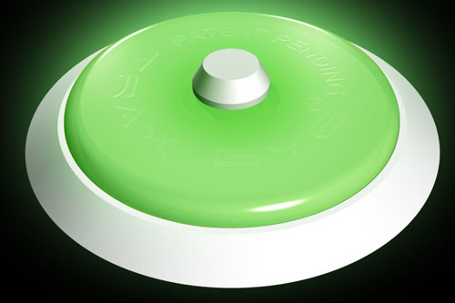

G L O W:
Our primary aim is to ensure a safe route can be seen in instances of low or no light.
We WILL save lives.

Grant taylor (TraxEyes inventor), Simon Pratt & Nick Farthing (Sustrans,), Councillor Mathew Dean (Cabinet Member for enviroment for Environment and Transport) and Dale Bostock (Southampton city council) at official opening of the Itchen Riverside Boardwalk
DON'T TELL US IT GLOWS. WE KNOW, IT GLOWS.
See for yourself
What we do:
Swansea County Council-Cycle paths
The city currently has around 50km of cycle and walking paths including two sections of the national cycle network. The unique TraxEyeTM system is being piloted by Swansea Council along a 4km section of the Clyne Valley cycleway. Rob Wachowski, Swansea Council's Cycling and Walking Officer, hopes the trial will lead to the new technology being used along other parts of the cycle network in Swansea. He said: "Cycling is becoming more popular as a mode of transport and also as a leisure past time. The Council's aim is to provide safe cycle networks throughout the city. The Traxeye system gives us the ability to provide a totally green and cost neutral lighting system along cycling and walking routes. It's a great idea that provides a really effective way of guiding walkers and cyclists along these paths during the darker hours." After visiting the site during the recent snow Rob also said: "The Traxeyes are installed and performing well with positive feedback from some local users. I’ve been up and down a few times recently and they are glowing through an inch of snow."
Broads Authority-Waterways

Steve Birtles, Head of Waterways Strategy and Safety "We have installed them on 1 of our moorings which is not lit and adjacent to a public house, they have been installed on the capping of the mooring so as to delineate the water’s edge hopefully to inform people where the edge of the mooring is. We have chosen this particular site as a few years ago we did have the unfortunate occurrence of a drowning from this mooring as someone returned to their boat from the public house at night. The Traxeyes are great and I am surprised at the level of 'glow' the give off they clearly do the job well, we have also had feedback from our users who think it is a great idea to install these and have commented how good product is. We intend to roll out the use of traxeyes to some of the more rural locations of our mooring network as part of general safety management."
English Heritage Trials TraxEyes-Pathways
English Heritage trials glowing circles as part of commitment to ramparts safety. As part of an ongoing safety programme at the Berwick-upon-Tweed Ramparts, English Heritage is trialling a series of TraxEye™ Marker Studs along the edge of The Starks section of the ramparts. The 50 TraxEye™ Marker Studs are due to be installed on Friday, 12 September and will serve to highlight the edge of the pathway on the top of the ramparts at night. Over the past two decades, there have been over 30 serious injuries relating to falls from the ramparts, including four fatalities. English Heritage takes these incidents very seriously and, in consultation with Berwick Borough Council and Northumberland County Council, will be seeking to introduce measures that do not compromise the magnificent setting but do ensure that the necessary safety precautions are in place. Rob Flower, English Heritage’s Head of Visitor Operations for the North East, said, “Over the past twenty years there have been four deaths related to night-time falls from the ramparts. In the face of those statistics and to try and prevent future accidents, it is vital that appropriate safety measures are put in place. We do not recommend that people walk along the ramparts in the dark but, for those that do, these markers may provide a valuable guide.” Self-illuminating, they absorb light during the day and then re-emit it at night as a strong afterglow. The circles measure 5cm in diameter and are just over half a centimetre high, ensuring that they are unobtrusive in the daytime. If this trial proves to be successful, additional TraxEyes may be fitted.
Contact
If you have any questions regarding our product or service, please contact us by phone or email
All UK & Ireland sales enquiries or product information please Email: info@traxeyes.com or contact
Grant Taylor on 07812 122 825
email grant.taylor@traxeyes.com
For all other sales enquiries for Europe please call:+31 6 520 77 935
email:
info@traxeye.nlor visit www.traxeye.nl Bart Schinkel
Managing Director
Newvisibility International BV
Van Pallandtstraat 6, 6881 MT Velp
P.O. BOX 134, 6880 AC Velp
The Netherlands
DIN 67510 Evaluation
The TraxEyeTM Safety Illumination System has been evaluated by the the German Institute for Standardization (Deutsches Institut für Normung e.V., or DIN) under their 67510 standard.
DIN 67510 Testing and Results
All measurements of the TraxEyeTM Safety Illumination System were taken in total darkness. It is important to understand this distinction when trying to compare an absolute DIN measurement with the apparent luminance perceived in low ambient lighting. These differences in scientific luminance vs. practical luminance are explained below. A TraxEyeTM photo luminescent disc was given an 8 minute exposure to a xenon source. The luminance value was then measured in millicandela per square meter (mcd/m2) and recorded against a time axis measured in minutes. The DIN 67510 results for the TraxEyeTM Safety Illumination System are as follows:
According to the DIN 67510 standard, a photo luminescence at or below .03 mcd/m2 is virtually undetectable to the human eye. For all intents and purposes, a photo luminescent pigment has stopped glowing at that minimal level. Extrapolation of the data suggests that the TraxEyeTM photo luminescent disc reaches 0.3 mcd/m2 at approximately 4000 minutes, or 66 hours.
Scientific Luminance
Scientifically speaking, the TraxEyeTM Safety Illumination System will glow for approximately 2 days and 9 hours (a total of 66 hours) after only an 8 minute exposure to natural daylight. If this photo luminescent "return on investment" is broken down into percentages, we see that the TraxEyeTM Safety Illumination System has a laboratory efficiency of approximately 50,000%
Practical Luminance
Testing in a multitude of real world lighting conditions from night time to a heavily shaded tree-lined walking trail at noon, has revealed a perceived glow time less than the DIN 67510 result but still excellent. The TraxEyeTM Safety Illumination System has an actual perceived, and therefore useful, glow cycle of about 720 minutes (12 hours) after only an 8 minute exposure to natural daylight. That is a practical efficiency of around 9,000%.
In other words, the TraxEyeTM Safety Illumination System has stored enough energy to emit an easily perceived glow that will last throughout the night, including late evening and early mornings, after only 8 minutes in normal daylight. Therefore, any path or public area lined with the TraxEyeTM Safety Illumination System will be clearly marked during these hours of darkness and can be safely traversed as long as the TraxEyeTM Marker Studs are not removed or obstructed by debris.
In conclusion, both scientific lab testing and practical field testing have confirmed that the TraxEyeTM Safety Illumination System will glow brightly all night long after only 8 minutes in normal daylight. This unanimous result underscores the TraxEyeTM Safety Illumination System's popularity as the #1 "green" illumination solution on the market today.
DIN 67510 Evaluation
The TraxEyeTM Safety Illumination System has been evaluated by the the German Institute for Standardization (Deutsches Institut für Normung e.V., or DIN) under their 67510 standard.
DIN 67510 Testing and Results
All measurements of the TraxEyeTM Safety Illumination System were taken in total darkness. It is important to understand this distinction when trying to compare an absolute DIN measurement with the apparent luminance perceived in low ambient lighting. These differences in scientific luminance vs. practical luminance are explained below. A TraxEyeTM photo luminescent disc was given an 8 minute exposure to a xenon source. The luminance value was then measured in millicandela per square meter (mcd/m2) and recorded against a time axis measured in minutes. The DIN 67510 results for the TraxEyeTM Safety Illumination System are as follows:
According to the DIN 67510 standard, a photo luminescence at or below .03 mcd/m2 is virtually undetectable to the human eye. For all intents and purposes, a photo luminescent pigment has stopped glowing at that minimal level. Extrapolation of the data suggests that the TraxEyeTM photo luminescent disc reaches 0.3 mcd/m2 at approximately 4000 minutes, or 66 hours.
Scientific Luminance
Scientifically speaking, the TraxEyeTM Safety Illumination System will glow for approximately 2 days and 9 hours (a total of 66 hours) after only an 8 minute exposure to natural daylight. If this photo luminescent "return on investment" is broken down into percentages, we see that the TraxEyeTM Safety Illumination System has a laboratory efficiency of approximately 50,000%
Practical Luminance
Testing in a multitude of real world lighting conditions from night time to a heavily shaded tree-lined walking trail at noon, has revealed a perceived glow time less than the DIN 67510 result but still excellent. The TraxEyeTM Safety Illumination System has an actual perceived, and therefore useful, glow cycle of about 720 minutes (12 hours) after only an 8 minute exposure to natural daylight. That is a practical efficiency of around 9,000%.
In other words, the TraxEyeTM Safety Illumination System has stored enough energy to emit an easily perceived glow that will last throughout the night, including late evening and early mornings, after only 8 minutes in normal daylight. Therefore, any path or public area lined with the TraxEyeTM Safety Illumination System will be clearly marked during these hours of darkness and can be safely traversed as long as the TraxEyeTM Marker Studs are not removed or obstructed by debris.
In conclusion, both scientific lab testing and practical field testing have confirmed that the TraxEyeTM Safety Illumination System will glow brightly all night long after only 8 minutes in normal daylight. This unanimous result underscores the TraxEyeTM Safety Illumination System's popularity as the #1 "green" illumination solution on the market today.